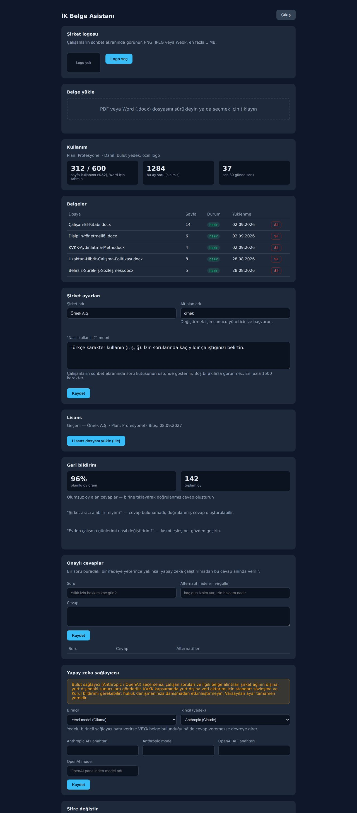

Şirket içinde çalışır
Runs on your network
Belgeler, sorular ve cevaplar sizin sunucunuzda kalır. KVKK uyumu politika değil, mimari sonucu.
Documents, questions and answers stay on your server. KVKK compliance by architecture, not by policy.
İK belgelerinizi yükleyin, çalışanlarınız politika sorularına anında ve kaynaklı cevap alsın. Veriler şirket ağınızdan çıkmaz.
Upload your HR documents and employees get instant, sourced answers about company policy. Data never leaves your network.
İzin hakları, bordro tarihleri, sigorta kapsamı. İK gününün büyük bölümü aynı cevapları yazmakla geçiyor.
Leave entitlements, payroll dates, insurance coverage. Most of an HR day goes into retyping the same answers.
El kitabı, disiplin yönetmeliği, KVKK metni, iş sözleşmesi. Çalışan doğru belgeyi bulamıyor, bulsa da tabloyu okuyamıyor.
Handbook, disciplinary rules, privacy notice, contract. Employees can't find the right file — or can't read the table inside it.
Genel amaçlı yapay zeka araçları soruları ve belgeleri yurt dışı sunuculara gönderiyor. Bu, İK verisi için kabul edilebilir değil.
General-purpose AI tools ship questions and documents to servers abroad. For HR data, that isn't an acceptable trade.
Kurulum sizin sunucunuzda, Docker ile. Model, indeks ve panel aynı makinede kalır.Installed on your server with Docker. Model, index and dashboard all stay on that one machine.
PDF veya Word dosyalarını panele sürükleyin. El kitabı, yönetmelik, sözleşme — hepsi desteklenir.
Drag PDF or Word files into the dashboard. Handbooks, regulations, contracts — all supported.
Belgeler bölümlenir, tablolar satır satır ayrıştırılır, Türkçe anlamsal arama indeksi kurulur.
Documents are sectioned, tables parsed row by row, and a Turkish semantic index is built.
Doğal dilde soru, belgeye dayanan cevap ve kaynak maddesi. Belgede yoksa cevap uydurulmaz.
Natural-language question, document-grounded answer, cited clause. If it isn't in the docs, nothing is invented.
Cevaplanamayan sorular panelde birikir. İK doğru cevabı bir kez yazar, sonrasında anında sunulur.
Unanswered questions collect in the dashboard. HR writes the answer once; it's served instantly after that.

Altı tasarım kararı bu ürünü İK verisi için güvenli kılıyor.
Six design decisions make this safe for HR data.
Belgeler, sorular ve cevaplar sizin sunucunuzda kalır. KVKK uyumu politika değil, mimari sonucu.
Documents, questions and answers stay on your server. KVKK compliance by architecture, not by policy.
43 soruluk test seti her güncellemeden sonra çalışır: kıdem sınırları, izin tabloları, red senaryoları.
A 43-question eval runs after every update: seniority boundaries, leave tables, refusal cases.
İK onaylı cevaplar, akıllı önbellek ve tablo satırından doğrudan yanıt; çoğu soru milisaniyede döner.
HR-verified answers, a smart cache and direct table-row lookups return most questions in milliseconds.
Türkçe tam metin arama, Türkçe uyumlu gömme modelleri, Türk iş mevzuatına göre test edilmiş izin hesabı.
Turkish full-text search, Turkish-capable embeddings, leave maths tested against Turkish labour law.
Belgede olmayan bilgi için sistem açıkça bilmediğini söyler ve soruyu İK paneline yükseltir.
When something isn't in the documents the system says so plainly and escalates the question to HR.
İstenirse harici bir sağlayıcı yedek olarak tanımlanabilir. Varsayılan kapalı, açılışta KVKK uyarısı gösterilir.
An external provider can be configured as fallback. Off by default, enabled only behind an explicit KVKK warning.
Tüm planlar şirket içi kurulum, Türkçe destek ve sınırsız çalışan erişimi içerir.Every plan includes on-premises install, Turkish support and unlimited employee access.
Fiyatlar KDV hariçtir ve yıllık sözleşme esasına göre aylık olarak gösterilmiştir.Prices exclude VAT and are shown per month on an annual agreement.
30 dakikalık demoda İK SoruCevap'ı kendi belgelerinizle çalışırken görün. Kurulum ve test seti sonuçları dahil.
In a 30-minute demo, see İK SoruCevap running on your own documents — install walkthrough and eval results included.
Kredi kartı yok · Sunucunuzda kurulumNo credit card · Installed on your server